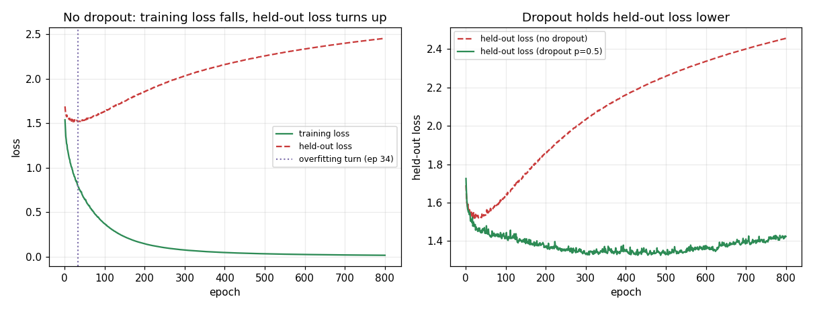

The loss, the overfitting turn, and dropout: why the held-out number is the only one you can trust
Day 3 drove a training loss down and made the staff-level point that a falling *training* loss is a fact about the optimizer, not the model. Day 4 is where that warning becomes operational. It names the number the loop is minimizing (the loss), picks the right one for classification (cross-entropy), and then shows the failure that a training-loss-only view is structurally blind to: overfitting. The cure — dropout, specifically inverted dropout with its 1/(1−p) train-time scaling — is built from scratch and, critically, *measured*, because dropout is one of those techniques where the folklore ("it regularizes") is easy to repeat and easy to get wrong (wrong rate, wrong data regime, left on at eval).
Every number below comes from experiment.py: a seeded, float64, from-scratch NumPy MLP (no autograd, no framework), 30 → 512 (ReLU) → 4, trained on a nonlinear 4-class task — a (radius-band × angle-band) decision boundary hidden among 28 distractor-noise features, with 10% of labels randomly flipped. That combination — genuine nonlinear signal, real distractor and label noise, a wide net, and only N_train = 600 — is deliberately chosen: it is a regime where the net *can* memorize the training noise and where dropout *can* actually help. A trivially separable task would collapse to loss 0 and hide every effect this note is about.
The mechanism: one scalar, and cross-entropy's shape
The loss is one number for "how wrong were these guesses," and it is one number for a mechanical reason: the backward pass needs a single scalar to push down. For classification the standard choice is cross-entropy, which for one example is −log(p) where p is the probability the model assigned to the *correct* class. The shape is the whole point — the penalty is near 0 when p → 1, modest (−log 0.5 ≈ 0.69) when the model is unsure, and unbounded as p → 0. Confident *and wrong* (tiny p on the true class) is punished hardest, which is exactly the signal you want: the loop fixes its most arrogant mistakes first. Training then minimizes the average cross-entropy over the training set — the mean, not the sum, so the objective is batch-size-independent.
The subtlety a staff reader must hold: that objective only ever touches the *training* data. Nothing in it references data the model has not seen. So the loop can drive the training loss arbitrarily low without the model being any good — which is precisely what the next section measures.
The overfitting turn: the training loss lies, the held-out loss tells the truth
Train the over-capacity net with no dropout and watch both losses per epoch. The training loss falls monotonically toward zero. The held-out loss does something the training loss never reveals: it bottoms out, then turns and climbs.
The overfitting turn is at epoch 34, where held-out loss bottoms at 1.5187. After that, the training loss keeps falling (1.5395 → 0.0169) while the held-out loss *rises* +0.9373 to 2.4560. The final generalization gap (held-out − train) is +2.4391: the model reached a near-perfect training loss of 0.0169 and a held-out loss of 2.4560 — worse, at the end, than the uniform-guess baseline of ln(4) = 1.3863. A practitioner watching only the training curve would have declared victory somewhere around epoch 400 and shipped a model that had been *degrading on unseen data for 366 epochs*.
The mechanistic cause is the standard one: capacity (512 hidden units, ~17.9k weights) far exceeds what 600 noisy points can pin down, so the cheapest way to shrink training loss past the turn is to memorize individual points — including the 10% of labels that are pure noise. Memorizing noise cannot transfer, so held-out loss rises.
The cure, measured: dropout narrows the gap — but it is not free
Re-run the identical net and optimizer with inverted dropout at p = 0.5 on the hidden layer. Every effect the theory predicts shows up in the numbers:
best held-out loss : no-dropout=1.5187 dropout=1.3258 (IMPROVED +0.1929)
best held-out acc : no-dropout=0.3930 dropout=0.4753 (IMPROVED +0.0822)
FINAL held-out loss : no-dropout=2.4560 dropout=1.4237 (IMPROVED +1.0323)
final generalization gap : no-dropout=+2.4391 dropout=+1.2746 (NARROWED +1.1645)
Dropout improved best held-out loss by 0.1929, lifted best held-out accuracy by +0.0822 (0.393 → 0.475), and cut the *final* held-out loss almost in half (2.4560 → 1.4237). The final gap narrowed by 1.1645. That is the regularizer working: by randomly zeroing half the activations each step, no single neuron can become a crutch, so the network is pushed toward distributed features that transfer instead of a brittle memorized lookup.
The trade-off is visible in the same run and must be stated: dropout makes the training loss worse on purpose. The final training loss with dropout is 0.1491 versus 0.0169 without — an order of magnitude higher. Practice is deliberately harder. This is the design tension: a larger p fights memorization harder but handicaps more of the network at once, so it can *under*-fit if you overdo it. p is the one knob, and you tune it by watching the train-vs-held-out gap, never the training loss alone. p = 0.5 is the standard hidden-layer starting point, but "add dropout" is not automatically a win: too small a p barely regularizes and too large a p under-fits, and whether it helps at all depends on the data regime (a near-linearly-separable task with little noise gives it nothing to fix). That is exactly why this experiment fixed a regime where the effect is real — a nonlinear boundary with genuine label noise — and then *measured* the gain rather than asserting it.
The 1/(1−p) scaling, and why eval needs no adjustment
Zeroing half a layer's outputs halves its total signal, so training and test would see systematically different magnitudes unless something corrects it. Inverted dropout puts the correction in *training*: divide the survivors by (1 − p).
full layer = [4.0, 4.0, 4.0, 4.0] sum = 16.0
after drop (no scale) = [4.0, 0.0, 4.0, 0.0] sum = 8.0 (half of 16)
survivors / (1-0.5) = [8.0, 0.0, 8.0, 0.0] sum = 16.0 (back to full)
eval (all on, no scale) = [4.0, 4.0, 4.0, 4.0] sum = 16.0
Train-time sum (16) equals eval-time sum (16): the magnitudes agree, so eval is a plain full-strength forward pass with no scaling. On the real 512-unit layer this holds in expectation too — mean hidden activation 0.5789 (full) versus 0.5788 (inverted-dropout), ratio 1.000. This is why the scaling lives in training: it buys a do-nothing-extra eval pass.
The failure mode that ships silently: dropout left on at eval
The classic bug is not a crash — it is a model in train mode when you evaluate, so dropout keeps randomly zeroing neurons while you predict. Nothing errors; the numbers are just quietly, randomly wrong. The tell is that identical inputs give different answers across runs. Evaluating the trained dropout model on the *same fixed* held-out set five times, with dropout mistakenly left on versus in proper eval mode:
dropout LEFT ON at eval (bug) : [0.403, 0.4158, 0.407, 0.4183, 0.4073]
spread across runs = 0.0152 (same input, different answers -- NOISY)
proper EVAL mode (dropout off): [0.4713, 0.4713, 0.4713, 0.4713, 0.4713]
spread across runs = 0.0000 (IDENTICAL every run -- STABLE)
Two things to notice. First, the buggy accuracy *jitters* by 0.0152 across runs on data that never changed — that non-determinism is the diagnostic. Second, the buggy accuracy (~0.41) is also *lower* than the correct eval accuracy (0.4713), because a randomly crippled network is strictly weaker than the full one at test time. The senior habit that catches this in one line: before reporting any metric, confirm the model is in eval mode and that scoring the same fixed data twice returns the *exact* same number. A non-zero spread means a train-only behavior (dropout, or batchnorm's running stats) is still active.
The ceiling: what dropout cannot do
Dropout regularizes; it cannot manufacture information the training set never contained. In this run, even the best dropout model tops out at 0.4753 held-out accuracy — well above the 0.25 random floor, but capped by the 10% irreducible label noise and the finite N_train = 600. Dropout changed *how* the model leaned on the data it had; it could not hand the model data it was never given. Closing that kind of gap is a data problem (collect more, or more varied, examples), not a regularization problem — which is why the honest summary of the whole day is: the train-vs-held-out gap, not the training loss, is the number you trust, and no regularizer excuses you from measuring it.
What the run establishes
The mini-batch loop from Day 3 optimizes; Day 4 shows that optimization and generalization are different things you must measure separately. On a from-scratch NumPy MLP: the training loss fell to 0.0169 while held-out loss turned up at epoch 34 and climbed to 2.4560 (gap +2.4391); inverted dropout at p = 0.5 cut that final gap to +1.2746 and lifted best held-out accuracy 0.393 → 0.475, at the cost of a deliberately higher training loss (0.0169 → 0.1491); and leaving dropout on at eval made accuracy jitter by 0.0152 on fixed data that a proper eval pass scored identically every time. Not one of those facts was visible in the training loss alone.

Reproducible experiment
experiment.py
#!/usr/bin/env python3
"""
Evidence for M5 Day 4 — "Full Training: The Loss & Dropout".
ONE concrete claim, made falsifiable:
Watching the TRAINING loss alone hides overfitting. On an over-capacity MLP
trained on a small, noisy set, the training loss keeps falling toward zero
while the HELD-OUT (validation) loss bottoms out at some epoch and then TURNS
UPWARD -- that turn is the overfitting turn, the moment "learning to read"
became "memorizing the answer key". Inverted dropout (zero a fraction p of the
hidden activations each step, scale the survivors by 1/(1-p)) is the named cure:
it improves the best held-out loss/accuracy and dramatically narrows the final
train/held-out gap. And dropout MUST be off at eval: left on, the same fixed
data yields a jittering accuracy across re-runs; eval mode (a plain
full-strength pass) is rock-steady.
We back it up four ways, all from a real NumPy MLP (no autograd, no framework):
(1) THE OVERFITTING TURN: train an over-capacity net with NO dropout; record
train + held-out loss every epoch; find the epoch where held-out loss turns
upward while training loss keeps falling.
(2) DROPOUT AS CURE: same net + inverted dropout (p=0.5); the best held-out
loss/accuracy improve and the final train/held-out gap shrinks sharply.
(3) THE 1/(1-p) SCALING is real arithmetic: dropping half of [4,4,4,4] and
scaling survivors by 1/(1-0.5) restores the sum to the full-layer sum, so
train-time and eval-time magnitudes agree.
(4) THE CLASSIC BUG: dropout left ON at eval makes accuracy on the SAME fixed
data jitter across re-runs; eval mode makes it identical every run.
The task is a NONLINEAR 4-class problem (a radius-band x angle-band structure)
buried in distractor-noise features, with 10% label noise. That nonlinear true
boundary plus real noise is what dropout genuinely helps with: a wide net can
memorize the training noise (train loss -> 0) while the held-out loss turns up,
and distributed features (which dropout forces) transfer better than a memorized
lookup. A trivially separable task would collapse to loss 0 and hide every one
of these effects.
Self-contained script (NOT a notebook), so savefig() into assets/ is allowed.
Everything is seeded, so the printed numbers are reproducible. float64 so the
losses are not swamped by float32 round-off.
"""
import os
import math
import numpy as np
import matplotlib
matplotlib.use("Agg") # headless backend -- no display in the sandbox
import matplotlib.pyplot as plt
HERE = os.path.dirname(os.path.abspath(__file__))
ASSETS = os.path.join(HERE, "assets")
os.makedirs(ASSETS, exist_ok=True)
# ---------------------------------------------------------------------------
# A NONLINEAR 4-class task with real noise -- the regime where overfitting and
# dropout are both visible.
# * True label = (radius band) x (angle band): a genuinely nonlinear boundary
# a linear model can't get and a wide MLP must bend to fit.
# * The two informative coordinates are hidden among 28 distractor-noise
# features, so the net has plenty of room to memorize spurious structure.
# * 10% of labels are randomly flipped -- irreducible noise the net can only
# "fit" by memorizing individual training points (pure overfitting fuel).
# ---------------------------------------------------------------------------
N_IN, N_HID, N_OUT = 30, 512, 4
N_TRAIN = 600 # small enough that a 512-wide net overfits it
N_HELD = 4000 # large held-out set for a stable generalization estimate
FEAT_NOISE = 0.4 # per-feature Gaussian noise
LABEL_NOISE = 0.10 # fraction of labels randomly flipped (irreducible)
def make_data(n, rng):
ang = rng.uniform(0.0, 2.0 * math.pi, n)
rad = rng.uniform(0.2, 3.0, n)
x0, x1 = rad * np.cos(ang), rad * np.sin(ang)
r_band = (rad > 1.6).astype(int) # inner vs outer ring
a_band = (np.sin(2.0 * ang) > 0).astype(int) # angular sector
y = r_band * 2 + a_band # 4 classes from a nonlinear combo
base = np.stack([x0, x1], axis=1) # the 2 informative features
extra = rng.standard_normal((n, N_IN - 2)) # 28 distractor features
X = np.concatenate([base, extra], axis=1)
X = X + rng.standard_normal(X.shape) * FEAT_NOISE # feature noise
flip = rng.random(n) < LABEL_NOISE # irreducible label noise
y[flip] = rng.integers(0, N_OUT, flip.sum())
y_oh = np.zeros((n, N_OUT))
y_oh[np.arange(n), y] = 1.0
return X, y, y_oh
Xtr_raw, ytr, Ytr = make_data(N_TRAIN, np.random.default_rng(2))
Xho_raw, yho, Yho = make_data(N_HELD, np.random.default_rng(3))
# Standardize using TRAINING statistics only (no held-out leakage).
_MU, _SD = Xtr_raw.mean(axis=0), Xtr_raw.std(axis=0) + 1e-8
Xtr = (Xtr_raw - _MU) / _SD
Xho = (Xho_raw - _MU) / _SD
# ---------------------------------------------------------------------------
# The MLP with an INVERTED-DROPOUT hidden layer. Forward pass caches what the
# backward pass needs, INCLUDING the dropout mask so gradients flow only through
# the neurons that survived this step.
# ---------------------------------------------------------------------------
def init_params(rng):
return {
"W1": rng.standard_normal((N_IN, N_HID)) * math.sqrt(2.0 / N_IN), # He init
"b1": np.zeros(N_HID),
"W2": rng.standard_normal((N_HID, N_OUT)) * math.sqrt(2.0 / N_HID),
"b2": np.zeros(N_OUT),
}
def softmax(z):
z = z - z.max(axis=1, keepdims=True) # subtract max for stability
e = np.exp(z)
return e / e.sum(axis=1, keepdims=True)
def forward(p, x, y_oh, p_drop=0.0, training=False, rng=None):
"""Forward pass with optional INVERTED dropout on the hidden layer.
training=True and p_drop>0 : draw a 0/1 keep-mask, zero the dropped units,
and scale the SURVIVORS by 1/(1-p_drop) so the layer's expected output
matches the full (no-dropout) layer -- the c8 scaling done IN TRAINING.
training=False (eval) : NO mask, NO scaling -- a plain full-strength
forward pass. Because the scaling already happened in training, eval
needs no adjustment (the whole point of inverted dropout).
"""
z1 = x @ p["W1"] + p["b1"] # (B, N_HID) pre-activation
h = np.maximum(0.0, z1) # ReLU hidden activations
if training and p_drop > 0.0:
keep = 1.0 - p_drop
# mask: 1 where kept, 0 where dropped; survivors divided by keep = 1/(1-p)
mask = (rng.random(h.shape) >= p_drop).astype(h.dtype) / keep
h = h * mask
else:
mask = np.ones_like(h) # eval: everything kept, no scale
logits = h @ p["W2"] + p["b2"] # (B, N_OUT) class scores
probs = softmax(logits)
# MEAN cross-entropy over the batch (the average, size-independent)
loss = -np.mean(np.sum(y_oh * np.log(probs + 1e-12), axis=1))
return loss, (z1, h, mask, probs)
def backward(p, x, cache, y_oh):
"""Analytic gradient. The dropout mask is reused so gradient flows only
through the surviving, up-scaled units -- the same units the loss saw."""
z1, h, mask, probs = cache
B = x.shape[0]
dlogits = (probs - y_oh) / B # (B, N_OUT), mean reduction
dW2 = h.T @ dlogits
db2 = dlogits.sum(axis=0)
dh = (dlogits @ p["W2"].T) * mask # dropout mask on the backward path
dz1 = dh * (z1 > 0) # ReLU gate
dW1 = x.T @ dz1
db1 = dz1.sum(axis=0)
return {"W1": dW1, "b1": db1, "W2": dW2, "b2": db2}
def sgd_step(p, grads, lr):
for k in p:
p[k] = p[k] - lr * grads[k] # param = param - lr * grad
def eval_loss(p, X, Y):
"""Plain full-strength forward pass (eval mode): no dropout, no scaling."""
return float(forward(p, X, Y, training=False)[0])
def eval_acc(p, X, y, p_drop=0.0, training=False, rng=None):
"""Accuracy. training=True with p_drop>0 = the BUG: dropout left on at eval."""
_, (_, _, _, probs) = forward(p, X, np.zeros((X.shape[0], N_OUT)),
p_drop=p_drop, training=training, rng=rng)
return float((probs.argmax(axis=1) == y).mean())
# ---------------------------------------------------------------------------
# The training loop. Records per-epoch train + held-out loss so we can SEE the
# overfitting turn. p_drop=0 -> no dropout; p_drop>0 -> inverted dropout ON.
# ---------------------------------------------------------------------------
BATCH, LR, EPOCHS = 32, 0.01, 800
def train(X, Y, epochs, p_drop, lr=LR, batch=BATCH, seed=10):
p = init_params(np.random.default_rng(seed))
n = X.shape[0]
rng = np.random.default_rng(seed + 100)
tr_hist, ho_hist, acc_hist = [], [], []
for e in range(epochs):
idx = rng.permutation(n) # shuffle indices each epoch
for start in range(0, n, batch):
b = idx[start:start + batch]
xb, yb = X[b], Y[b]
_, cache = forward(p, xb, yb, p_drop=p_drop, training=True, rng=rng)
grads = backward(p, xb, cache, yb)
sgd_step(p, grads, lr)
# measure BOTH losses in eval mode (plain full-strength pass, no dropout)
tr_hist.append(eval_loss(p, X, Y))
ho_hist.append(eval_loss(p, Xho, Yho))
acc_hist.append(eval_acc(p, Xho, yho))
return p, tr_hist, ho_hist, acc_hist
# ===========================================================================
# (1) THE OVERFITTING TURN -- train loss falls forever, held-out loss turns up.
# ===========================================================================
print("=" * 72)
print("(1) THE OVERFITTING TURN (NO dropout, over-capacity net on tiny data)")
print("=" * 72)
p_plain, tr_plain, ho_plain, acc_plain = train(Xtr, Ytr, EPOCHS, p_drop=0.0)
turn = int(np.argmin(ho_plain)) # epoch of lowest held-out loss
print(f"net = {N_IN}->{N_HID}(ReLU)->{N_OUT}, N_train={N_TRAIN}, N_held={N_HELD}")
print(f"uniform-guess baseline = ln({N_OUT}) = {math.log(N_OUT):.4f}")
print(f"held-out loss BOTTOMS at epoch {turn + 1} (loss={ho_plain[turn]:.4f}); "
f"after that it RISES -> the overfitting turn.")
print("epoch | train loss | held-out loss")
for e in sorted(set([0, turn, EPOCHS // 4, EPOCHS // 2, EPOCHS - 1])):
tag = " <-- turn" if e == turn else ""
print(f" {e + 1:>3} | {tr_plain[e]:>11.4f} | {ho_plain[e]:>11.4f}{tag}")
print(f"training loss keeps falling : {tr_plain[0]:.4f} -> {tr_plain[-1]:.4f} "
f"({'FALLS' if tr_plain[-1] < tr_plain[0] else 'no'})")
print(f"held-out loss turns up : min {ho_plain[turn]:.4f} (ep {turn + 1}) "
f"-> {ho_plain[-1]:.4f} (ep {EPOCHS}) "
f"({'RISES ' + format(ho_plain[-1] - ho_plain[turn], '+.4f') + ' after the turn' if ho_plain[-1] > ho_plain[turn] else 'no'})")
gap_plain = ho_plain[-1] - tr_plain[-1]
print(f"final generalization gap (held-out - train) = {gap_plain:+.4f} "
f"(train {tr_plain[-1]:.4f} vs held-out {ho_plain[-1]:.4f})")
print()
# ===========================================================================
# (2) DROPOUT AS CURE -- same net + inverted dropout narrows the gap.
# ===========================================================================
P_DROP = 0.5
print("=" * 72)
print(f"(2) DROPOUT AS CURE (same net, inverted dropout p={P_DROP})")
print("=" * 72)
p_drop, tr_drop, ho_drop, acc_drop = train(Xtr, Ytr, EPOCHS, p_drop=P_DROP)
best_plain_ho, best_plain_acc = min(ho_plain), max(acc_plain)
best_drop_ho, best_drop_acc = min(ho_drop), max(acc_drop)
gap_drop = ho_drop[-1] - tr_drop[-1]
print(f"training loss falls SLOWER / settles HIGHER with dropout "
f"(practice is harder on purpose):")
print(f" no-dropout final train loss = {tr_plain[-1]:.4f}")
print(f" dropout final train loss = {tr_drop[-1]:.4f} "
f"({'higher' if tr_drop[-1] > tr_plain[-1] else 'lower'} -- as predicted)")
print(f"best held-out loss : no-dropout={best_plain_ho:.4f} "
f"dropout={best_drop_ho:.4f} "
f"({'IMPROVED ' + format(best_plain_ho - best_drop_ho, '+.4f') if best_drop_ho < best_plain_ho else 'no gain'})")
print(f"best held-out acc : no-dropout={best_plain_acc:.4f} "
f"dropout={best_drop_acc:.4f} "
f"({'IMPROVED ' + format(best_drop_acc - best_plain_acc, '+.4f') if best_drop_acc > best_plain_acc else 'no gain'})")
print(f"FINAL held-out loss : no-dropout={ho_plain[-1]:.4f} "
f"dropout={ho_drop[-1]:.4f} "
f"({'IMPROVED ' + format(ho_plain[-1] - ho_drop[-1], '+.4f') if ho_drop[-1] < ho_plain[-1] else 'no gain'})")
print(f"final generalization gap : no-dropout={gap_plain:+.4f} "
f"dropout={gap_drop:+.4f} "
f"({'NARROWED ' + format(gap_plain - gap_drop, '+.4f') if gap_drop < gap_plain else 'widened'})")
print()
# ===========================================================================
# (3) THE 1/(1-p) SCALING is real arithmetic (the c8 math ladder, in code).
# ===========================================================================
print("=" * 72)
print("(3) THE 1/(1-p) SCALING -- survivors up-scaled so magnitudes agree")
print("=" * 72)
layer = np.array([4.0, 4.0, 4.0, 4.0])
full_sum = layer.sum()
keep_mask = np.array([1.0, 0.0, 1.0, 0.0]) # drop units 2 and 4 (p=0.5)
dropped_no_scale = layer * keep_mask # naive dropout, no scaling
scaled = layer * keep_mask / (1.0 - P_DROP) # INVERTED dropout survivors
print(f"full layer = {layer.tolist()} sum = {full_sum:.1f}")
print(f"after drop (no scale) = {dropped_no_scale.tolist()} "
f"sum = {dropped_no_scale.sum():.1f} (too small -- half of {full_sum:.0f})")
print(f"survivors / (1-p) = / {1 - P_DROP:.1f} = {scaled.tolist()} "
f"sum = {scaled.sum():.1f} (back to full {full_sum:.0f})")
print(f"eval (all on, NO scale) = {layer.tolist()} sum = {full_sum:.1f} "
f"=> train sum ({scaled.sum():.0f}) == eval sum ({full_sum:.0f}): magnitudes agree.")
# Verify at scale on the real net: expected activation is preserved in the mean.
_rng = np.random.default_rng(77)
h_full = np.maximum(0.0, Xtr @ p_plain["W1"] + p_plain["b1"]) # full activations
keep = 1.0 - P_DROP
h_dropped = h_full * (_rng.random(h_full.shape) >= P_DROP) / keep # inverted dropout
print(f"real net check: mean hidden activation full={h_full.mean():.4f} "
f"inverted-dropout={h_dropped.mean():.4f} "
f"(ratio {h_dropped.mean() / max(h_full.mean(), 1e-12):.3f} ~ 1.0 -- preserved)")
print()
# ===========================================================================
# (4) THE CLASSIC BUG -- dropout left ON at eval makes accuracy jitter.
# ===========================================================================
print("=" * 72)
print("(4) THE CLASSIC BUG -- dropout left ON at eval vs proper eval mode")
print("=" * 72)
# Same trained dropout model, same FIXED held-out data, evaluated 5 times.
buggy_accs = []
for r in range(5):
rng = np.random.default_rng(1000 + r) # different mask each run
buggy_accs.append(eval_acc(p_drop, Xho, yho, p_drop=P_DROP, training=True, rng=rng))
proper_accs = [eval_acc(p_drop, Xho, yho, training=False) for _ in range(5)]
print(f"dropout LEFT ON at eval (bug) : {[round(a, 4) for a in buggy_accs]}")
print(f" spread across runs = {max(buggy_accs) - min(buggy_accs):.4f} "
f"(same input, different answers -- NOISY)")
print(f"proper EVAL mode (dropout off): {[round(a, 4) for a in proper_accs]}")
print(f" spread across runs = {max(proper_accs) - min(proper_accs):.4f} "
f"({'IDENTICAL every run -- STABLE' if max(proper_accs) - min(proper_accs) == 0.0 else 'still varies'})")
print()
# ---------------------------------------------------------------------------
# Plot: the whole story on one canvas.
# left -- no-dropout train vs held-out loss (the overfitting turn marked).
# right -- held-out loss with vs without dropout (the cure holds it lower).
# ---------------------------------------------------------------------------
fig, (axL, axR) = plt.subplots(1, 2, figsize=(11.0, 4.2))
ep = range(1, EPOCHS + 1)
axL.plot(ep, tr_plain, "-", color="#2D8B55", label="training loss")
axL.plot(ep, ho_plain, "--", color="#C93B3B", label="held-out loss")
axL.axvline(turn + 1, color="#7C6DAA", ls=":", lw=1.4,
label=f"overfitting turn (ep {turn + 1})")
axL.set_xlabel("epoch")
axL.set_ylabel("loss")
axL.set_title("No dropout: training loss falls, held-out loss turns up")
axL.legend(fontsize=8)
axL.grid(True, alpha=0.25)
axR.plot(ep, ho_plain, "--", color="#C93B3B", label="held-out loss (no dropout)")
axR.plot(ep, ho_drop, "-", color="#2D8B55", label="held-out loss (dropout p=0.5)")
axR.set_xlabel("epoch")
axR.set_ylabel("held-out loss")
axR.set_title("Dropout holds held-out loss lower")
axR.legend(fontsize=8)
axR.grid(True, alpha=0.25)
fig.tight_layout()
plot_path = os.path.join(ASSETS, "overfitting_turn_and_dropout.png")
fig.savefig(plot_path, dpi=110)
print(f"saved plot : assets/{os.path.basename(plot_path)}")
print()
print("KEY RESULT: with NO dropout the training loss fell "
f"{tr_plain[0]:.4f} -> {tr_plain[-1]:.4f} while the held-out loss bottomed at "
f"epoch {turn + 1} ({ho_plain[turn]:.4f}) and TURNED UP to {ho_plain[-1]:.4f} "
f"(final gap {gap_plain:+.4f}); inverted dropout (p={P_DROP}) improved best "
f"held-out loss {best_plain_ho:.4f} -> {best_drop_ho:.4f} and best held-out "
f"accuracy {best_plain_acc:.4f} -> {best_drop_acc:.4f}, cutting the final gap "
f"to {gap_drop:+.4f}. Dropout left ON at eval made accuracy jitter by "
f"{max(buggy_accs) - min(buggy_accs):.4f} across identical runs; eval mode was "
"identical every run. The falling training loss alone never revealed any of "
"this -- only the held-out number did.")
Output
========================================================================
(1) THE OVERFITTING TURN (NO dropout, over-capacity net on tiny data)
========================================================================
net = 30->512(ReLU)->4, N_train=600, N_held=4000
uniform-guess baseline = ln(4) = 1.3863
held-out loss BOTTOMS at epoch 34 (loss=1.5187); after that it RISES -> the overfitting turn.
epoch | train loss | held-out loss
1 | 1.5395 | 1.6906
34 | 0.7868 | 1.5187 <-- turn
201 | 0.1448 | 1.8586
401 | 0.0476 | 2.1633
800 | 0.0169 | 2.4560
training loss keeps falling : 1.5395 -> 0.0169 (FALLS)
held-out loss turns up : min 1.5187 (ep 34) -> 2.4560 (ep 800) (RISES +0.9373 after the turn)
final generalization gap (held-out - train) = +2.4391 (train 0.0169 vs held-out 2.4560)
========================================================================
(2) DROPOUT AS CURE (same net, inverted dropout p=0.5)
========================================================================
training loss falls SLOWER / settles HIGHER with dropout (practice is harder on purpose):
no-dropout final train loss = 0.0169
dropout final train loss = 0.1491 (higher -- as predicted)
best held-out loss : no-dropout=1.5187 dropout=1.3258 (IMPROVED +0.1929)
best held-out acc : no-dropout=0.3930 dropout=0.4753 (IMPROVED +0.0822)
FINAL held-out loss : no-dropout=2.4560 dropout=1.4237 (IMPROVED +1.0323)
final generalization gap : no-dropout=+2.4391 dropout=+1.2746 (NARROWED +1.1645)
========================================================================
(3) THE 1/(1-p) SCALING -- survivors up-scaled so magnitudes agree
========================================================================
full layer = [4.0, 4.0, 4.0, 4.0] sum = 16.0
after drop (no scale) = [4.0, 0.0, 4.0, 0.0] sum = 8.0 (too small -- half of 16)
survivors / (1-p) = / 0.5 = [8.0, 0.0, 8.0, 0.0] sum = 16.0 (back to full 16)
eval (all on, NO scale) = [4.0, 4.0, 4.0, 4.0] sum = 16.0 => train sum (16) == eval sum (16): magnitudes agree.
real net check: mean hidden activation full=0.5789 inverted-dropout=0.5788 (ratio 1.000 ~ 1.0 -- preserved)
========================================================================
(4) THE CLASSIC BUG -- dropout left ON at eval vs proper eval mode
========================================================================
dropout LEFT ON at eval (bug) : [0.403, 0.4158, 0.407, 0.4183, 0.4073]
spread across runs = 0.0152 (same input, different answers -- NOISY)
proper EVAL mode (dropout off): [0.4713, 0.4713, 0.4713, 0.4713, 0.4713]
spread across runs = 0.0000 (IDENTICAL every run -- STABLE)
saved plot : assets/overfitting_turn_and_dropout.png
KEY RESULT: with NO dropout the training loss fell 1.5395 -> 0.0169 while the held-out loss bottomed at epoch 34 (1.5187) and TURNED UP to 2.4560 (final gap +2.4391); inverted dropout (p=0.5) improved best held-out loss 1.5187 -> 1.3258 and best held-out accuracy 0.3930 -> 0.4753, cutting the final gap to +1.2746. Dropout left ON at eval made accuracy jitter by 0.0152 across identical runs; eval mode was identical every run. The falling training loss alone never revealed any of this -- only the held-out number did.